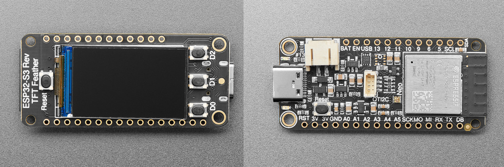
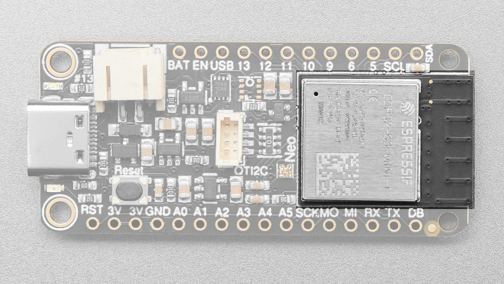
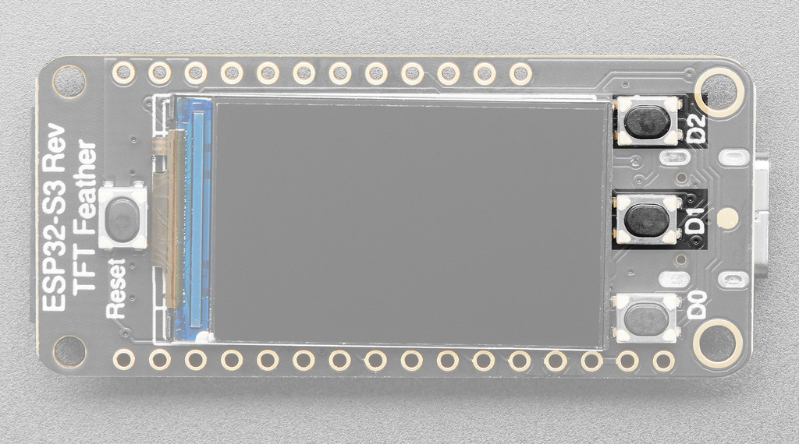
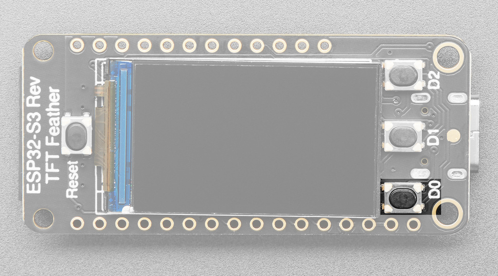
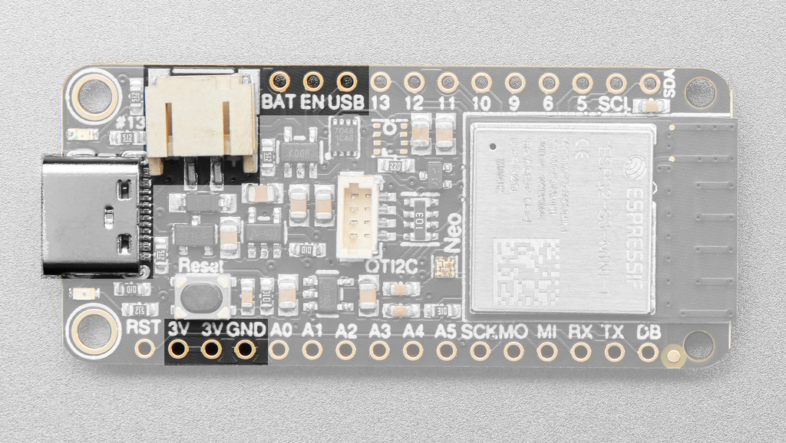
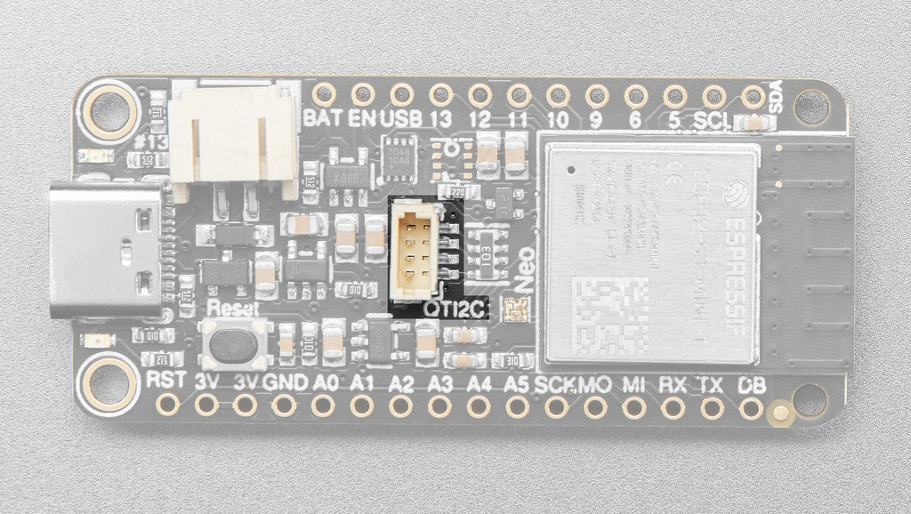
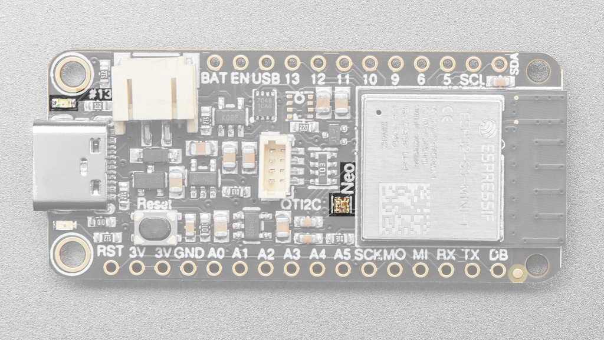
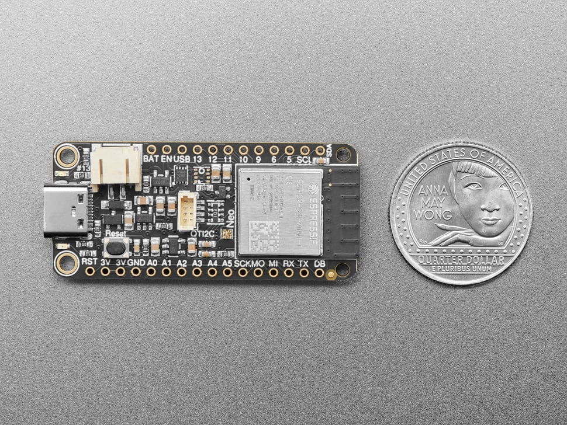
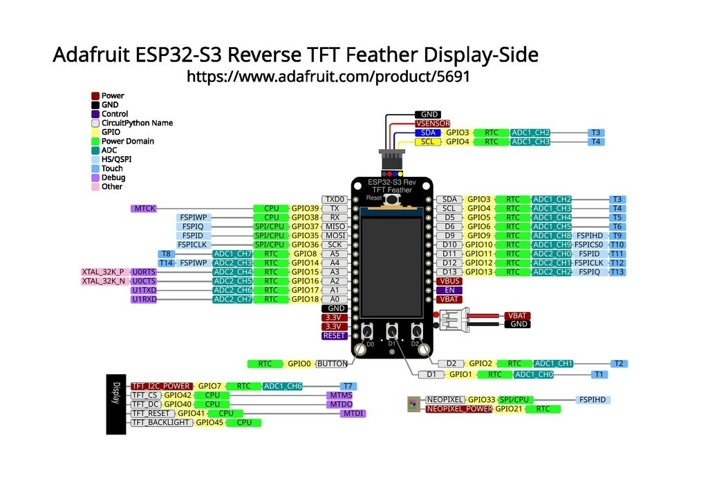

Vital statistics
The 30-second tour
The ESP32-S3 is Espressif's Wi-Fi microcontroller — the same family that powers a huge share of the world's smart plugs and IoT gadgets. Two Xtensa cores at 240 MHz and megabytes of RAM is lavish by microcontroller standards, and exactly why it runs Python comfortably (chapter 02).
Naming things
Why “Reverse”? Why “Feather”?

Feather is Adafruit's standard board shape — a shared form-factor spec with a fixed pin layout, so hundreds of boards and stackable “FeatherWing” add-ons are interchangeable, like LEGO for electronics.
A regular TFT Feather puts the screen on the same side as the chips. The Reverse edition flips it to the opposite side, so you can mount the board flat against a case or stand and still face the display — perfect for a desk gadget that's all screen.
Field notes
Subsystems, up close
Everything the dash touches, in hardware form. Captions note the GPIO pins you'll meet again in chapter 03.


GPIO7 and its backlight off
GPIO45 — both must be driven HIGH before you see anything.
D1 (GPIO1) and D2 (GPIO2)
are simple push-buttons that read HIGH when pressed. The dash uses them to page
between API keys.
D0 (GPIO0) is wired the opposite way —
it reads LOW when pressed — because it doubles as the BOOT button that puts the
chip into firmware-flashing mode. In the dash it toggles the account overview.


GPIO33,
power gate GPIO21) — your “hello, world” in chapter 02.
The map
Pinout: the pins this project uses
Every pad on the board has a GPIO number; firmware talks to hardware by number. You don't need to memorize the map — you need to know it exists, and where the handful of pins the dash uses live.

| Signal | GPIO | Why the dash cares |
|---|---|---|
| SPI clock / data (SCK, MOSI) | 36 / 35 | The display bus — pixels travel here at 40 MHz |
| TFT CS / DC / RESET | 42 / 40 / 41 | Display control lines the ST7789 driver toggles |
| TFT backlight | 45 | HIGH = screen lit |
| TFT + I²C power rail | 7 | Must be HIGH or the display is dead — the classic “blank screen” gotcha |
| Buttons D0 / D1 / D2 | 0 / 1 / 2 | D0 reads LOW when pressed (it's also BOOT); D1/D2 read HIGH |
| NeoPixel data / power | 33 / 21 | Not used by the dash — but used by you, next chapter |
Two pins on this board are power gates, not signals: GPIO7 (display + STEMMA rail) and GPIO21 (NeoPixel). Adafruit gates these rails so battery projects can cut power to save energy — the price is that you must switch them on in software first.
Go deeper